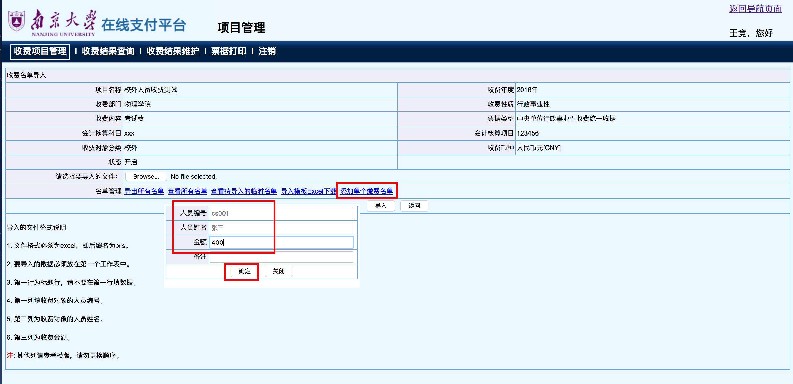
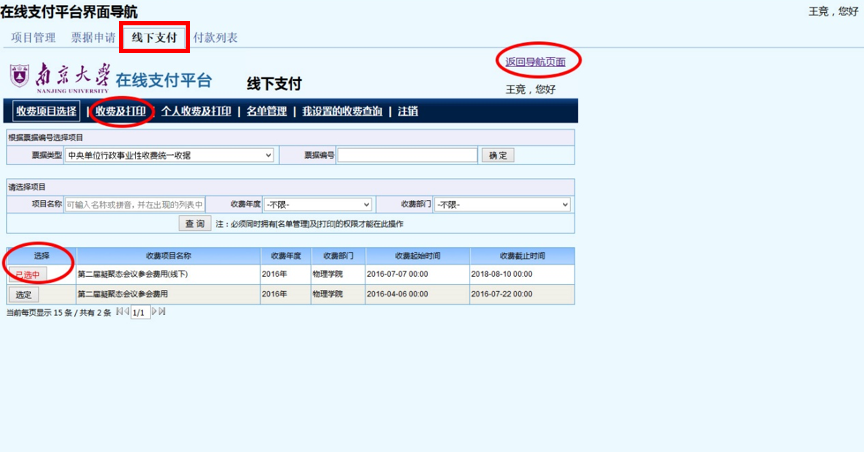
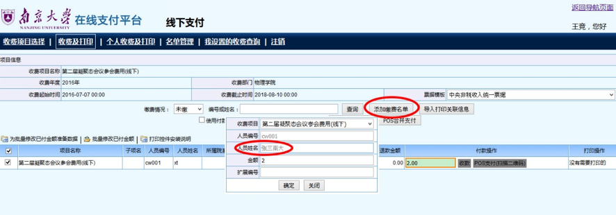
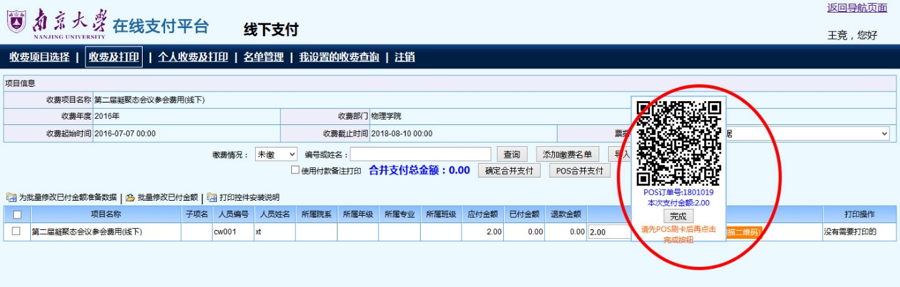

实用案例参考指南¶
案例: 收取校内人员的考试费¶
简介¶
针对某 校内人员 ， 使用南京大学在线财务系统创立一个收费项目并实现线上的收费。
管理员步骤¶
进入 后台项目系统 。 进入 http://pay.nju.edu.cn -> 选择 校内用户 -> 输入管理员账号密码 -> 到达 在线支付平台界面导航
新建收费项目 。点击 项目申请 按钮 -> 设置 项目选项 (具体设置见下文的列表) -> 点击 保存
收费项目名称：校外人员收费测试
收费性质：行事业性
会计核算项目：123456(具体以院系的项目编号为准，意思是到账的账号是哪个)
收费对象：校内
注解
此处是与 校外收费 唯一不同之处。
收费内容：考试费
收费依据：考试费用，每学分200元(具体以收费的相关审批文件中 收费标准 的规定为准)
是否可申请退款：是
是否支持 POS 支付：是
小技巧
- 其它选项若不清楚可以不用填。
- 该页面的内容之后可以更改。
设置完成后，项目的状态如下：
向财务处提出项目的 审批申请 -> 等候审批通过
小技巧
申请审批请电话联系：025-83684117
正式对外开启项目 。设置项目的 开启时间段 -> 点击 开启

录入某校内人员的 缴费信息 。点击项目的 名单管理 -> 点击 添加单个缴费名单 -> 输入人 员编号 MG1522999 -> 输入人员姓名 钟某某 -> 输入金额 1000 -> 点击确定
注解
- 人员编号 必须 是校内人员的账号，如学生的学号，一般字母均为大写。
- 姓名必须与人员编号对应，否则无法录入。
完成管理员的操作。钟某某同学的校园账号将会自动生成一笔待支付的款项。
案例: 收取校外人员的考试费¶
简介¶
针对某 校外人员 。使用南京大学在线财务系统创立一个收费项目并实现线上的收费。
管理员步骤¶
进入 后台项目系统 。进入 http://pay.nju.edu.cn -> 选择 校内用户 -> 输入管理员账号密码 -> 到达 在线支付平台界面导航
新建收费项目 。点击 项目申请 按钮 -> 设置 项目选项 (具体设置见下文的列表) -> 点击 保存
收费项目名称：校外人员收费测试
收费性质：行政事业性
会计核算项目：123456(具体以院系的项目编号为准，意思是到账的账号是哪个)
收费对象：校外
注解
此处是与 校内收费 唯一不同之处。
收费内容：考试费
收费依据：考试费用，每学分 200 元(具体以收费的相关审批文件中 收费标准 的规定为准)
是否可申请退款：是
是否支持 POS 支付：是
小技巧
- 其它选项若不清楚可以不用填。
- 该页面的内容之后可以更改。
设置完成后，项目的状态如下：
向财务处提出项目的 审批申请 -> 等候审批通过
小技巧
申请审批请电话联系：025-89684117
正式对外开启项目 。设置项目的 开启时间段 -> 点击 开启
录入某校外人员的 缴费信息 。点击项目的 名单管理 -> 点击 添加单个缴费名单 -> 输入人 员编号 cs001 -> 输入人员姓名 张三 -> 输入金额 400 -> 点击确定
注解
- 姓名最好不要超过5个字。
- 人员编号 建议用字母+数字的形式表示。
查看缴费人员的支付码 。点击 查看所有名单 -> 点击查询 -> 复制张三的付款密码(即 支付码 )：
ECCF71DD14867940-> 将支付码发送给张三完成管理员的操作。
用户缴费步骤¶
张三进入 http://pay.nju.edu.cn -> 选择 校外用户 -> 输入提供的 16 位支付码 BECCF71DD14867940 -> 点击登录 -> 按操作进行网银或支付宝的缴费
案例: 使用 POS 机进行线下收费¶
使用 南京大学在线支付平台 的线下支付功能(POS 机支付)进行收费。
重要
进行线下支付时，你需要一台可以访问外网的电脑。
操作步骤¶
重要
首先需要申请一个项目, 并在项目设置中开启 是否支持 POS 支付 ，具体设置方式见手册中的 案例: 收取校内人员的考试费 和 案例: 收取校外人员的考试费 。
进入项目的 导航页面 -> 选择上方的 线下支付 -> 选中你的项目，见图中的 已选中 -> 随后选择 收费及打印 。
小技巧
- 若是看不到菜单栏中的 线下支付 ，请尝试刷新一下页面，或者退出重新登录你的账号。
- 有时候选中项目后会自动跳转到 收费及打印 栏目。
选择 添加缴费名单 -> 输入相关信息。
重要
- 人员编号 可以任意，建议若干英文字母加数字。
- 人员姓名必须小于等 5 个字 ，可以出现单位名称，如
东大张三，但请确保是 真实信息 。 - 金额即为需要令对方支付的数额。
选择付款操作中的 POS 支付(扫描二维码) -> 扫描二维码 -> 用户刷卡 -> 点击完成 -> 完成支付。
